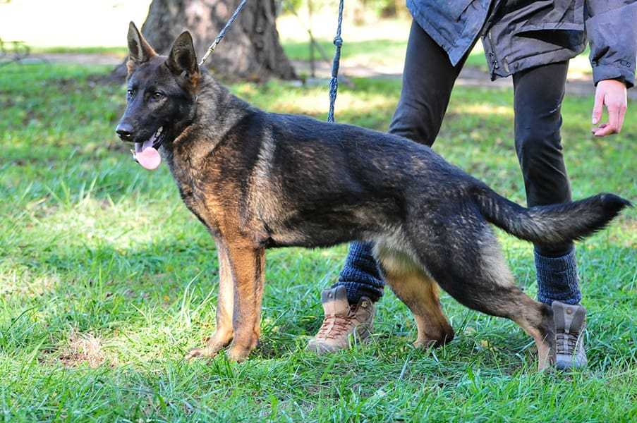

برخی از نژادهای سگ به صورت غریزی برای نگهبانی ساخته شدن و سگ ژرمن شپرد هم جزو این نژادهاست.
این نژاد سگ باهوش، وفادار و بسیار با انگیزه و پر انرژی هست. آموزش پذیری سگ ژرمن به دلیل یادگیری فوق العاده سریع و غریزه قوی اش برای محافظت و مراقبت از صاحبش و افراد خانواده باعث شده که اون یک سگ نگهبان بسیار عالی به حساب بیاد. این ویژگی ها باعث شده سگ ژرمن جزو محبوب ترین نژادهای سگ در ایران و جهان هم باشه و سالیانه در لیست « محبوبترین نژادهای سگ » اعلام شده توسط AKC در مقام دوم قرار بگیره.
آموزش نگهبانی هم مانند بسیاری از آموزش های دیگه، نیاز به دانستن مهارتهای لازم داره. سگ ژرمن شپرد به صورت غریزی یه سگ نگهبان هست ولی باید برای مطیع بودن تربیت بشه و آموزش ببینه. شما میتونین خودتون با یادگیری اصول آموزشی، تربیت سگ ژرمن رو برعهده بگیرین.
اگه میپرسین که چگونه سگ ژرمن را تربیت کنیم؟ باید بگیم که قراره درباره تمام این موارد به طور مفصل صحبت کنیم؛ با پت پرس همراه باشین تا تربیت سگ ژرمن شپرد رو از تولگی تا بزرگسالی قدم به قدم بررسی کنیم.
آموزش سگ ژرمن شپرد
هر سگ نگهبانی قبل از آموزش نگهبانی باید آموزشهای پایه رو دریافت کنه؛ چون آموزشهای اصولی و پایه برای یاد دادن اصول نگهبانی به سگ لازم و ضروری هستن.
برای مثال اگر سگی آموزش «واوق واق کن» و «ساکت» رو ندیده باشه، چطوری میخواید بهش بفهمونید به غریبه پارس کنه و حضورش رو اطلاع بده؟
یا اگر سگی نتونه تفاوت بین افراد خانواده و غریبهها رو متوجه بشه و عادت داشته باشه به همه کس پارس کنه چطوری بهش اعتماد میکنید که درست شما رو مطلع کنه؟
پس برای تربیت سگ نگبان، از آموزشهای پایهای شروع کنید و وقتی این آموزشها ملکه ذهن سگ شدن، بهش آموزش سگ نگهبان گارد و پاسبان رو بدید.
اگه میخواین وظیفه آموزش سگ ژرمن شپرد رو خودتون برعهده بگیرین، پت پرس به شما پیشنهاد میکنه اول کتاب تربیت سگ ژرمن شپرد رو مطالعه کرده و یاد بگیرید که چطوری میشه یه سگ ژرمن رو تربیت کرد و ازش یه سگ حرف گوش کن و خوش رفتار ساخت.
ایبوک راهنمای تربیت سگ ژرمن شپرد از تولگی تا نگهبانی
در کتاب جامع تربیت سگ ژرمن شپرد (PDF) میخوانید:
- چه چیزهایی از چه سنی لازمه به سگ ژرمن یاد بدید
- چطوری اونها رو یاد بدید
- اشتباهایی که در تربیت سگ ژرمن انجام میدید چیا هستن
- نحوه آموزش تمامی فرامین به ژرمن شپرد
- چطوری از سگ ژرمن یه سگ نگهبان گارد یا پاسبان بسازید
- تشخیص و حل تمام مشکلات رفتاری در سگهای ژرمن
بهترین زمان برای تربیت سگ ژرمن کیه؟
اگه از ما بپرسین که آموزش سگ ژرمن از چند ماهگی باید انجام بشه، قطعاً میگیم که آموزشش رو از تولگی شروع کنین. درواقع تربیت توله سگ ژرمن شپرد خیلی آسونتر از تربیت سگ ژرمن تو بزرگسالیه. بهخصوص از ۸ هفتگی به بعد که دوران طلایی آموزش و یادگیریشونه.
چنین رویهای تو تربیت توله سگ ژرمن شپرد باعث میشه که احتمال دچار شدنش به مشکلات رفتاری یا نافرمانیهاش در بزرگسالی به شدت کم بشه. در کل بهترین زمان تربیت سگ ژرمن عبارتند از:
- ۸ تا ۱۲ هفتگی
- ۱۰ تا ۱۲ هفتگی
- ۴ تا ۶ ماهگی
چرا تاکید میکنیم که بهترین برای زمان تربیت سگ ژرمن تولگیه؟ چون اونا تازه دارن دنیا رو کشف میکنن و نوع رفتار کردن رو یاد میگیرن. پس اینجوری میتونن خیلی راحت به روتینهایی که شما براشون در نظر میگیرین عادت کنن.
پس اگه قراره یه ژرمن شپرد به خونه بیارین سعی کنین توله باشه تا بتونین تربیت این سگ ژرمن رو از همون دوران اولیه برعهده بگیرین. اما اگه سرپرستی ژرمنهای بزرگسال رو هم قبول کردین، هیچ مشکلی نیست.
چگونه توله سگ ژرمن را تربیت کنیم؟
شما باید این برنامه یا روتین روزانه رو براساس روند زیر پیش ببرین:
صبحها
اول از همه اون رو بیارین بیرون تا دستشویی بکنه. بعد بذارین حسابی بچرخه. حالا وقت صبحانه است. یه توله سگ ژرمن شپرد ۸ هفتهای معمولاً روزی ۳ تا ۴ وعده غذا میخوره. شما باید نیازهای غذاییاش رو بشناسین. اگه این کار براتون سخته، از برنامه غذایی پت پرس کمک بگیرین تا دامپزشک بهتون بگه که از هر چی، چقدر باید بهش بدین. اینجوری راحت میتونین غذاش رو تقسیمبندی کنین.
غذا و آب رو به توله سگ ژرمن شپرد بدین تا بخوره. بعد از استراحت اون رو برگردونین سر جاش. تو آموزش سگ ژرمن حتماً این نکته رو مد نظر داشته باشین که اون قبل از این که بخواد وعده غذایی بعدیاش رو بخوره باید هر ساعت از جاش بیرون آورده بشه و کمی بگرده. اما اگه حواستون بهش نیست، بهتره که تو جاش بمونه تا به کسی آسیب نرسونه.
بعد از ظهرها
بخشی از کار آموزش توله سگ ژرمن شپرد خودتون رو مثل صبح انجام بدین. با این تفاوت که اول غذاش رو بدین تو جاش بخوره و بعد بیاریدش بیرون تا گشتی بزنه و بعد برگردونیدش داخل باکس یا جاش.
عصرها
تو تربیت توله سگ ژرمن شپرد چیزی که خیلی اهمیت داره، رعایت روتینه. شما باید به زمانبندی خوتون وفادار بمونید تا اونم بهش عادت کنه. آموزش سگ ژرمن شپرد اون قدر کار سختی نیست. فقط به زمان کافی نیاز داره. عصرها هم کمابیش مثل صبح و بعدازظهر پیش میره. غذاش رو بدین، بذارین به اندازهی کافی فعالیت کنه و بعد ببریدش تو جاش.
دو نکته مهم در تربیت توله سگ ژرمن شپرد
فراموش نکنین که حتماً در طول روز اون رو به اسم خودش صدا کنین. بهخصوص وقتی دارین بهش غذا، تشویقی یا چیز خوبی میدین. آموزش توله سگ ژرمن شپرد با صدا کردنش به شکل بهتری پیش میره.
چون اون خودش رو میشناسه و میدونه هر وقت که صدا شده و بهش پاسخ داده، چیز خوبی دریافت کرده. اینجوری روند پاسخدهی و عکسالعمش رو سریعتر طی میکنه.
حواستون باشه که موقع تربیت سگ ژرمن هرگز از رفتارهای خشن یا تنبیه استفاده نکنین! در ادامه براتون میگیم که این نوع رفتارها چه عواقبی دارن و چطور آموزش سگ ژرمن شپردتون رو به کلی خراب میکنن.

تربیت سگ ژرمن شپرد نگهبان
تربیت ژرمن شپردها برای محافظت از صاحبشون وقتی یه غریبه بهش حمله میکنه (تربیت سگ بادی گارد) ضروری نیست چون سگ ژرمن شپرد به صورت غریزی این کار رو انجام میده.
ولی تربیت سگ ژرمن شپرد برای نگهبانی و گارد بودن، اهمیت زیادی داره زیرا بیشتر سگها اگر آموزش سگ نگهبان رو نبینن خطرناک میشن و ممکنه مشکلاتی رو برای شما به وجود بیارن.
چه تفاوتی بین سگ ژرمن نگهبان و سگ ژرمن گارد وجود داره؟
سگ ژرمن شپرد برای نگهبانی میتونه گزینه خوبی باشه چون ذاتاً حواسش به همه چی هست. سگ ژرمن نگهبان خیلی سریع هر تغییری رو به شما اطلاع میده و تو تشخیص غریبههای خطرناک استعداد زیادی داره. آموزش ژرمن شپرد برای نگهبانی قواعد خاص خودش رو داره که ما تو ادامه مطلب طی هفت قدم کامل براتون توضیحش دادیم.
اما سگ گارد ژرمن شپرد با ژرمن شپرد نگهبان تفاوت داره. از اونجایی که محافظ شخصی بودن تو خون این سگه، باید به تفاوت های آموزش سگ ژرمن نگهبان و گارد آگاه باشین. مثلاً تو آموزش گارد به سگ ژرمن خیلی مهمه که روی اصولی مثل آموزش بگیر به سگ ژرمن و رها کن یا آروم باش حساس بشین. چون اگه نتونین اون رو کنترل کنین ممکنه به عنوان محافظ شما به دیگران آسیب برسونه.
مثلاً تو سیر آموزش بگیر کردن سگ ژرمن میتونین از بازی با فریزبی استفاده کنین. یه واژه مشخص براش داشته باشین مثل بگیر یا بگیر و بیارش یا شکارش کن. از اون طرف هم باید یه کلمه مشخص برای متوقف کردن اون استفاده کنین. یه چیزی مثل کافیه یا تمومش کن، یا بسه. این آموزش و بازی به ژرمن شپرد کمک میکنه که بدونه باید با شنیدن این کلمه دست از پارس کردن و حملهور شدن به سمت مهاجم بکشه یا حتی اگه گازش گرفته، رهاش کنه.
آموزش ژرمن برای نگهبانی رو برای شما آوردیم و البته باید بدونین که یاد دادن بخشی از آموزشهای اولیه برای هر دو ژرمن نگهبان و ژرمن گارد ضروریه.
اشتباهی رایج در تربیت سگ نگهبان وحشی
بسیاری از افراد تصور میکنن اگر سگ ژرمن رو با خشونت آموزش بدن، اون سگ نگهبان خوبی میشه؛ این تصور کاملا غلط و اشتباهه!
تربیت سگ نگهبان با خشونت نه تنها از اون سگ یه نگهبان هوشیار نمیسازه بلکه باعث به وجود آمدن ۲ تا مشکل اصلی میشه:
- سگها به صورت غریزی به کسانی که با اونها با خشونت رفتار میکنن نه تنها وفادار نمیمونن بلکه ازش به درستی حساب نمیبرن و به دستوراتش گوش نمیدن.
- سگ نگهبانی که با خشونت تربیت شده و ابایی از نشون دادن خشونت نداره ممکنه به هر دلیل به اولین انسانی که از نظر اون سگ غیر قابل اعتماد اومد حمله کنه و آسیب جدی وارد کنه؛ حتی اگر اون انسان دزد یا متجاوز نباشه.
اگر سگ شما به هر دلیل به انسانی آسیب وارد کنه تمام مسئولیت اون به گردن شما هست.
در پکیج تربیت سگ ژرمن شپرد بهتون آموزش دادیم که چطوری یک سگ ژرمن یک سگ نگهبان هوشیار و حرفهای تربیت کنید.
کدام سگ ژرمن شپرد برای آموزش نگهبانی مناسبتره؟ (ویژگیهای سگ نگهبان)
سگ ژرمن شپرد نگهبان باید چند ویژگی داشته باشه تا تربیت سگ برای نگهبانی انجام شدنی باشه:
- نباید ترسو باشه
- نباید غیر قابل کنترل باشه
- سگ باید با صاحب و افرادی که توسط صاحب بهش معرفی میشن برخوردی دوستانه داشته باشه
- سگ در شرایط مختلف رفتاری باثبات و قابل پیش بینی داشته باشه
- سگ نگهبان باید از تولگی برای اجتماعی بودن آموزش های لازم را دیده باشه
سگ ژرمن شپردی که همه این ویژگیها رو داشته باشه میتونه مراحل تربیت سگ نگهبان ژرمن رو طی کنه و با آموزش درست به یک سگ ژرمن نگهبان مطمئن تبدیل بشه. البته ما توی مقاله تربیت سگ نگهبان در مورد تربیت سگ از زمان تولگی برای نگهبانی یا گارد رو توضیح دادیم که پیشنهاد میکنم حتما بخونینش.

قدم اول: آموزش توله سگ ژرمن شپرد برای نگهبانی
از تولگی سگ ژرمن رو اجتماعی بار بیارین؛ چرا؟
یکی از اصول مهم در آموزش سگ ژرمن برای نگهبانی اینه که در ذهن سگ نگهبان باید از تولگی تصور و فهم درستی درمورد شرایط طبیعی و شرایط غیرطبیعی و خطرناک شکل بگیره. سگ نگهبان باید توانایی تشخیص شرایط عادی رو از شرایط غیرطبیعی به دست بیاره.
یک سگ اجتماعی، ترسو و خجالتی نیست، در حضور صاحبش مطیع و خوش رفتاره و وقتی خطری صاحب یا اموال صاحبش رو تهدید میکنه، کاملا متوجه میشه.
اجتماعی کردن سگ ژرمن شپرد
- از تولگی سگ ژرمن رو تا جای ممکن به جاهای مختلف ببرین (پارک، کلینیک دامپزشکی ، مهمانی ها و منزل اقوام، مسافرت و …)
- اجازه بدین با آدم ها و حیوانات جدید آشنا بشه، معاشرت و بازی کنه
- همیشه مراقب باشین تجربه بدی از برخورد با آدم ها و حیوانات جدید در ذهنش باقی نمونه
- سگ های همه نژادها در صورتی که در تولگی اجتماعی نشن، در مواجهه با محیط های جدید میترسن و احتمال گاز گرفتن از روی ترس و فرار در مواقعی که احساس خطر میکنن، بیشتر میشه.
- سگ ژرمنی که در تولگی اجتماعی نشده باشه، در بزرگسالی ترسو یا پرخاشگر شده و نمیتونه سگ نگهبان خوبی باشه و وقتی در وضعیت های ناشناس قرار میگیره، به جای ایستادگی و اعتماد به نفس رفتار ترس یا پرخاش از خودش بروز میده.
اجتماعی کردن سگ یکی از اصول اولیه و مهم در تربیت سگ هست که با انجام دادنش کارتون برای آموزشای بعدی راحتتر میشه.
قدم دوم: تربیت سگ ژرمن شپرد برای اطاعت و فرمانبرداری
سگ ژرمن رو از تولگی در کلاس آموزش پیروی از دستورات توسط مربی سگ ثبت نام کنید یا خودتون با اختصاص دادن زمان کافی بهش آموزش بدید. اگر میخواهید برای سگتون مربی بگیرین، باید توجه داشته باشید که انتخاب مربی برای سگ مساله مهمیه؛ چون استفاده از مربی نامناسب نه تنها فرمان برداری سگ رو کم میکنه، بلکه ممکنه باعث تشدید مشکلات رفتاری سگ شما هم بشه. اگر نمی دونین مربی سگ چه آیتم هایی باید داشته باشه، بهتره مقاله مربی سگ رو مطالعه کنین.
تربیت سگ ژرمن شپرد ای که برای اطاعت از دستورات آموزش ندیده، سخت و دشواره.
برای تربیت سگ به خصوص سگ ژرمن نگهبان به منظور اطاعت از دستورات، باید از تولگی بهش آموزش های مقدماتی سگ ها و اطاعت از دستوراتی مثل : بشین، پاشو، بیا، بخواب ، ساکت و غیره رو بدین.
همه این موارد رو در کتاب تربیت سگ ژرمن آموزش دادیم.
ویژگیهای جلسات آموزشی سگ ژرمن شپرد :
- جدی
- کوتاه (۵ تا ۱۰ دقیقه)
- پیوسته (روزی ۲ الی سه بار)
- لذت بخش برای سگ
- همراه با تشویق و جایزه
شما میتونین در طول روز هم چندین بار دستورات رو به سگ بدین و در صورتی که انجام داد تشویق و تاییدش کنین تا اون دستورات براش تثبیت بشن.
توجه داشته باشید که تاییدیه مثبت و تشویق سگ در صورت انجام کارهای خوب، تاثیر بسیار بیشتری نسبت به تنبیه داره.
هرچی سگ ژرمن رو از نظر ذهنی فعالتر نگه دارین، اون سگ خوشحالتر، فرمانبردارتر و مطیعتره و نگهبان بهتری میشه.

قدم سوم: آموزش تربیت سگ ژرمن شپرد برای پارس کردن طبق دستور
اگر سگ این دستور رو یاد نگیره، ممکنه عادت کنه به صورت مداوم به هرکس یا هر چیزی پارس کنه.
به سگتون یاد بدید طبق دستور شما «صدا کنه یا حرف بزنه» و سپس بهش تشویقی بدید.
در قدم بعدی باید بهش یاد بدید دستور «ساکت» یا «بسه» رو اجرا کنه.
وقتی سگ ساکت شد سریعا تشویقش کنین و بهش یه تشویقی کوچک بدین.
این آموزش به سگ نگهبان باعث میشه روی پارس کردن سگ کنترل پیدا کنین. سگی که بی دلیل پارس میکنه خیلی دردسر سازه به خصوص در آپارتمان ها و فضاهای مسکونی.پس این آموزش رو حتما با سگتون تمرین کنین تا مشکلی در آینده برای شما پیش نیاد. اما اگر سگ شما این آموزش رو ندیده و بی دلیل و شب و نصف شب پارس میکنه، نگران نباشید ما توی مقاله پارس کردن سگ ؛ راه های جلوگیری از این مورد رو گفتیم.
ژرمن شپردها سگهای نگهبان باهوشی هستن و به سرعت یاد میگیرن.
قدم چهارم: آموزش سگ ژرمن شپرد برای نگهبانی و پارس کردن به غریبههایی که وارد خانه میشن
تربیت سگ ژرمن شپرد برای نگهبانی و اعلام حضور غریبهها در خانه رو به روش زیر میتونید انجام بدید:
- هر موقع به آدم های غریبهای که وارد خانه شدن یا اشیای غریبه پارس کرد، برید پیش سگ و بهش بگید ساکت وقتی ساکت شد تشویقی رو در اختیارش بذارین و با کلمات محبت آمیز تشویقش کنین.
- ولی باید دقت کنین که اگر سگ به آدمهای غریبه ای که خارج از خانه یا ملک شما هستن پارس کرد به هیچ عنوان تشویقش نکنین تا این عادت رو پیدا نکنه.
- اگر با نادیده گرفتن این عادت ترک نشه باید از تاییدیه منفی استفاده کرد.

قدم پنجم: افزایش حساسیت سگ ژرمن شپرد نگهبان به افراد غریبه متجاوز
آموزش گارد به سگ ژرمن یکی دیگه از مراحل تربیتی ژرمن هست. توی این آموزش به سگ یاد داده میشه چطور به افراد غریبه واکنش نشون بده و از صاحبش حفاظت کنه. برای آموزش گارد این مراحل انجام بدین:
از افراد غریبهای که سگ ژرمن نگهبان شما نمیشناسه درخواست کنین وانمود کنن میخوان به زور وارد منزل یا باغ یا حیاط خانه شما بشن.
وقتی سگ شروع به پارس کردن کرد، غریبه باید بعد از نگاه به سگ فرار کنه و شما هم همون موقع سگ رو تشویق و تایید کنین. همین کار میشه برای حفاظت از افراد و کودکان به ژرمن شپرد یاد بدید.
توجه: به سگ نگهبان اجازه ندید غریبه رو تعقیب کنه و قلادهاش رو نگه دارین.
تربیت سگ ژرمن نگهبان باید جوری باشه که فقط به شما اطلاع بده غریبهای وارد منزل شده و به محض فرار اون شخص ساکت بشه.
این آموزش اعتماد به نفس سگ رو نسبت به غریبهها بالا میبره.
قدم ششم: با قلاده با سگ ژرمن نگهبان راه برو
با قلاده سگ رو دور تا دور ملک خودتون راه ببرید تا همه مرزها رو بشناسه و به خوبی یاد بگیره.
اجازه ندید به آدمهایی که بیرون از خانه شما هستن پارس کنه. با بیتوجهی و تایید منفی این عادت رو ازش بگیرید.
به هیچ عنوان اجازه ندید سگ افراد رو تعقیب کنه.

قدم هفتم: مهمترین نکته در نگهداری از سگ ژرمن شپرد
برای نگهداری سگ ژرمن شپرد اولین موردی که باید بدونین اینه که بهجا و بهموقع بصورت صحیح بهش آموزش بدین.
این آموزشها با تنها گذاشتن سگ در خونه شروع میشن و با آموزشهایی مثل آموزش دستشویی سگ، آموزش قوانین خونه به سگ، تعیین یه برنامه مشخص، یاد دادن فرمان های مقدماتی و تکمیلی و…. ادامه پیدا میکنن.
تربیت سگ ژرمن شپرد، قدم به قدم و آسان
تربیت سگ بدون داشتن اطلاعات کافی، تقریبا غیر ممکنه. برای همینه که میگیم دونستن روش صحیح تربیت سگ برای هرکس که سگ داره یا میخواد سگ بگیره، از نون شب واجب تره.
به همین دلیله که ما تو پتپرس تصمیم گرفتیم تا کتاب الکترونیکی راهنمای جامع تربیت سگ رو بنویسیم تا شما بتونین به خوبی از عهده این کار بربیاین. برای ما تربیت درست سگها بیشتر از هر چیزی اهمیت داره. با خوندن این کتاب الکترونیکی ، میتونید سگتون رو بدون در نظر گرفتن سن و نژادش، تربیت کنید.
از تجربیات آموزش سگ ژرمن خودتون برای ما بگین. این که کدوم نکات براتون کاربردیتر بوده یا کدوم فصل از کتاب بیشتر از همه کمکتون کرده. این رو هم از یاد نبرین که برای دریافت بهترین نتیجه از تربیت سگ ژرمن آموزشش رو تولگی شروع کنین!
لینک کتاب در ابتدای مقاله موجود است
منبع:


سلام من یه توله ژرمن گرفتم الان ۸۰ روزشه ولی به شدت گاز میگیره
سلام امید عزیز
به خاطر تغییرات هورمونی میتونن به بعضی چیزا و حتی افراد حساس بشن، شما لازمه قبل حمله کردنش نشونه های عصبانیتشو بشناسین (مثلا به ترتیب لیسیدن بینی، پلک زدن مداوم، برگرداندن سر، پنجه زدن ملایم، سعی در ترک موقعیت، گوش خوابیده، قوز کردن و دم بین پاها، دراز کشیدن و پا بالا، سفت کردن بدن و خیره شدن، غرش) تا بتونین قبل مراحل آخر که حمله و گاز گرفتن هستن جلوشو بگیرین و آرومش کنین. اگه رفتارشناس میشناسین میتونین ازش کمک بگیرین ولی چیزی که باهاش سروکار دارین مشکل رفتاری هست و با تربیت و آموزش به مرور زمان یا کم میشه یا رفع میشه.
سلام ببخشیدکتاب جامع وکاملی برای تربیت وآموزش سگ ژرمن برای جستجوموجوددارین یامیشه ازجایی تهیه کردممنون میشم ازراهنمایی تون
سلام من یه ژرمن یک ساله و دوماهه رو به سرپرستی گرفتم که خیلی اجتماعیه و اصلاح به غریبه و آشنا واکنش منفی نداره آیا میتونم تربیتش کنم کمی خوی بگیر داشته باشه برای حفاظت از محیط خونه و خانواده
سلام سروش عزیز،
شدنش میشه ولی باتوجه به اینکه تا سن یک سالگیش اجتماعی بوده و حالا باید آموزش نگهبانی ببینه یه مقدار پروسه رو براتون سختتر و زمانبرتر میکنه و صبر و حوصله ی بیشتری میخواد.
این کتاب هم میتونه کمکتون کنه:
کتاب الکترونیکی تربیت سگ ژرمن شپرد (از توله تا نگهبان)
کتاب دانلود کردم ولی چطوری باز میشه
سلام دوست عزیز،
از طریق واتساپ یا تلگرام با همکاران پشتیبانیمون در ارتباط باشین تا راهنماییتون کنن:
تلگرام: ۰۹۹۸۱۱۹۸۰۸۷
واتساپ: ۰۹۰۳۱۷۴۶۹۳۹
بادرود فراوان برشما
من چگونه میتوانم جا دستسوی سگم را به جای جدید انتقال بدهم
سلام رسول عزیز،
میتونین سگتون رو از طریق پارک سگ در جای جدیدش محدود کنین، یا درکنار جای قبلیش جای جدید رو هم قرار بدین و همزمان آموزشش بدین که از اون هم استفاده کنه و حتما تشویقش کنین.
سلام وقتتون بخیر
من برای آموزش دستشویی شپردازیه نفرکمک گرفتم وبهم گفت که جای دستشویی شپردمخلوط غلیظ اب ووایتکس(ضدعفونی کننده)بریزم.میخواستم ببینم که این روش مشکلی به همراه نداره.برای سیستم تنفسی سگ مشکلی ایجادنمیکنه.
واینکه توله ی شپردمن عادت کرده که هرکدوم ازافرادخانواده رومیبینه خودشوبهش نزدیک میکنه ومیچسبونه این عادتش واقعاهمه روکلافه کرده.
توروخدااگه چیزی میدونید کمک کنید
سلام شیما جان،
وایتکس میتونه باعث تحریک سیستم تنفسیش بشه و بهتره که استفاده نکنین. محلول های مخصوص و مناسب خودشون در بازار هست که بخواین اون محل رو تمیز کنین.
برای نزدیک شدنش لازمه آموزش ببینه که میتونین راهنمایی کامل رو از این کتاب دنبال کنین:
کتاب الکترونیکی تربیت سگ ژرمن شپرد (از توله تا نگهبان)
سلام من میخام توله سگ ژرمن شپردشولاین۲ ماهه بخرم باید حتما جفت بخرم یا میشه فقط ماده
سلام مهدی عزیز،
بهتره که حیوونا به سرپرستی گرفته بشن تا خریداری.
میتونین تکی هم نگهداری کنین.
سلام من میخوام ی ژرمن شپرد ۳ ماهه بخرم و میخام که با من صمیمی باشه وبا خانوادم خوب باشه ولی به غریبه ها حالت تهاجمی داشته باشه وبه حرفام گوش بده باید چیکار کنم
سلام ببخشید من یه توله هاسکی رو به سرپرستی گرفتم۲ماه داره میخوام یه سگ ژرمن۲ماه هم داشته باشم کنار هم ایرادی نداره هردوشون هم پسرن؟؟
سلام لیندا جان،
اگه از تولگیشون کنار هم عادتشون بدین، هرکدوم فضای اختصاصی کافی خودشونو داشته باشه مشکلی پیش نمیاد. ترجیحا یک دفعه باهم رودرروشون نکنین و کم کم بهم عادتشون بدین. آموزش اجتماعی شدن هم حتما براشون انجام بدین.
خودتون توله ژرمن برای فروش دارین؟
سلام منصور عزیز،
خیر ما پرورش دهنده و فروشنده نیستیم 🙂
سلام می خواستم بدانم که در نژاد ژرمن سگ گارد ماده بهتره یا نر؟؟؟؟؟
سلام محمدکاظم عزیز،
اونقدری تفاوت بینشون نیست بیشتر بستگی به کیفیت و نوع آموزش شما داره. گفته شده تو آموزشا ماده راحتتر یاد میگیره و جدی تره.